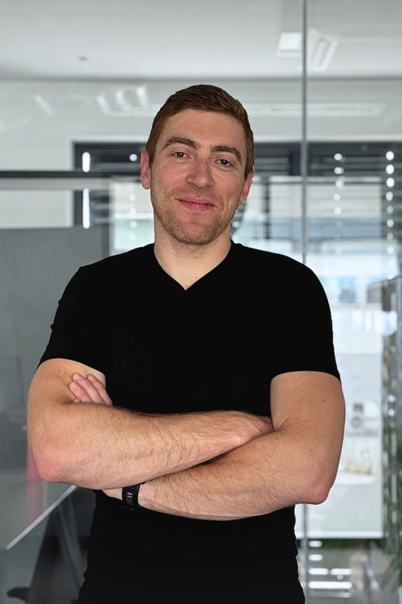

// AI Agents · MCP · Claude Code · Mobile · Cloud · IoT · Energy
I build AI that does real work — personal AI assistants, AI agents with human approval, and MCP servers that connect Claude to existing systems — and I teach how to do it safely: talks, workshops and courses on AI at work, AI agents, and AI-assisted development. Founder of Kubikos (German patent holder), MSc Mechatronics (Robotics, with distinction), technical trainer since 2013. Shipping across fitness, health tech, hospitality, and renewable energy.

Based in Salzburg, Austria, I founded Kubikos GmbH — a patented sensor platform that digitises analogue gym equipment for real-time AI-driven strength training analytics. Sensor accuracy validated at 99% with Paris Lodron University Salzburg. Partnered with Hammer Sport AG; exhibited at FIBO and ISPO Munich. I also run Sport Performance Systems e.U. as a freelance software engineering consultancy.
My background is in mechatronics and robotics (MSc with distinction, JKU Linz; JKU Study Abroad Excellence Award), with a second master's in Legal & Business Aspects in Technology. Certified IPMA Project Manager, Strategic & Technical Product Manager. My stack spans firmware for Nordic nRF chips to Flutter apps, AWS cloud architectures, HL7 healthcare messaging, and Modbus energy monitoring.
Before founding Kubikos, I led engineering teams at BEKO Engineering & Informatik, developed control systems at Kormaran, and spent a decade at Siconnex in the semiconductor industry. FFG grant recipient for in-situ energy harvesting research. Startup Salzburg FACTORY alumnus and Investors Lounge winner.
Every topic comes from systems I build and run myself — not from slides about other people's demos. I show what works, what breaks, and where humans stay in control. Available in German and English, for teams that want to use AI productively without giving up on security and data protection.
Mail, chats, calendar and tickets in one place, triaged by Claude running headless. Replies are prepared as drafts only — nothing goes out without me. Feature wishes from chats pass a review stage with follow-up questions before they become tickets; receipts are matched to the right company and month for bookkeeping.
Treat every message as untrusted input. AI steps that read foreign content get minimal rights, outputs are validated before use, tokens are split by purpose, and every write action waits for human approval. Concrete patterns, failure modes, and how to audit them.
Connect Claude to the systems you already have — REST backends, ticketing, time tracking, product catalogues — via the Model Context Protocol. OAuth for remote servers, passing the calling user's permissions through, per-tool rights, and what not to expose.
From prompting to a workflow: CLAUDE.md per repo, skills, guard hooks, role-based subagents across multiple repositories, and pull requests as the human review point. Plus docs-as-code: an AI pipeline that keeps a user manual current, with every change approved by a person.
Where AI pays off in small and mid-sized companies, and how to keep personal data safe: pseudonymise before classification, transcribe locally, mask secrets, keep suggestions as suggestions. A pragmatic engineering view, informed by a master's in legal & business aspects of technology.
A hands-on start for non-developers: what today's assistants can reliably do, how to brief them, how to check their output, and which tasks to hand over first — with examples from mail, planning, documentation and bookkeeping.
Planning an event, a workshop or in-house training? Get in touch →
AI agents with human approval gates, least-privilege tools and cost limits. Personal AI assistant with headless Claude triage and drafts-only output. Production MCP servers — remote, OAuth-secured servers in the Kubikos platform (the Kubikos MCP server is listed in Anthropic's Claude Connectors Directory as a community connector), an MCP layer over an existing hotel backend that passes the caller's permissions through, a ticketing MCP, and one published on npm. AI ticket triage (local embeddings, Claude on pseudonymised text). AWS Bedrock training-plan engine, Gemini/Veo3 content pipeline, LLM gateway routing, RAG. Claude Code workflows with skills, hooks and role-based subagents across multiple repos.
Security and architecture audit of a multi-tenant platform with tracked fixes, auth hardening, secrets hygiene, CI/CD and container deployments.
Production-grade cross-platform apps with complex BLE, USB serial, and real-time data requirements.
Low-level firmware for Nordic nRF52840/5340, ESP32; ADC signal processing, timing-critical sensor fusion.
AWS-centric architectures with serverless functions, auth flows, and real-time data pipelines.
HL7 v2 message processing (ADT, SIU), Firebird DB administration, patient management system integration.
Smart home automation, PV system integration, energy community management with real-time Modbus data.
My own AI assistant, running locally on my Mac. It merges mail, chats, calendars, tickets and
notes into one calm overview, and Claude (run headless every 15 minutes) triages everything by
company, project, priority and deadline and links related threads across sources. Replies are
prepared as drafts only — nothing is sent without me. Feature wishes from chats are deduplicated,
checked against the code and run through a review stage; missing details become short follow-up
questions before a ticket is created. Receipts are matched to the right company and month for
bookkeeping, copied only on my click. A sales pipeline view links each lead to the latest real
contact across all channels. Voice messages are transcribed locally.
Security by design: incoming messages are treated as untrusted input, so AI steps that read them
get minimal rights (read/search only, write only to a scratch folder); outputs are validated
before they are applied; tokens are split by purpose (a draft token that cannot send mail);
secrets are masked; the dashboard binds to localhost only. Exposed to Claude via its own MCP server.
Patented (DE 112021007607.8) end-to-end IoT product: K-FORCE PRO sensors (0.1 kg precision, 3-tonne rated) digitise analogue gym equipment. Patented sensor fusion (99% accuracy, Paris Lodron University). Flutter app, FIT CLOUD B2B platform. AI-powered content pipeline: exercise creator workflow generating descriptions, images (Gemini), and videos (Veo3) automatically; an AWS Bedrock training-plan engine (create/refine/adapt) that replaced the earlier n8n/Mistral stack, plus AI-generated user exercise drafts; and a production remote MCP server (OAuth, incl. native MCP clients) with an admin tool suite that lets an AI agent curate the exercise and equipment catalogue (safe soft-deletes, re-parenting, backfill worklists). Development runs on versioned Claude Code skills (bug triage, Sentry triage, release notes, deploys) with integration tests as a blocking release gate. Partnered with Hammer Sport AG. Piloting with FITINN. FFG-funded energy harvesting R&D. Exhibited at FIBO (2024/25/26) and ISPO Munich (2022).
Mobile app for Austrian Erneuerbare-Energie-Gemeinschaften (EEG), built for WebTec.
Real-time display of available community energy, consumption optimisation, and hardware
configuration. Features ML-based PV generation nowcasting using Open-Meteo weather data
and EEG billing API integration. Available on App Store and Google Play.
Around it: a support ticket platform with AI triage (local embeddings for duplicate detection and
assignee suggestions, Claude classification on pseudonymised text — suggestions only, with budget
alerts) and an MCP endpoint for tickets; a spot-price manager that schedules batteries against
day-ahead prices; PV and load forecasting with backtests and a simulation lab for the control chain.
The multi-repo platform is developed with Claude Code: a central plan, role-based subagents per repo
in their own worktrees, a read-only contract guardian, guard hooks and repo-specific skills.
Patient-facing mobile app for rehabilitation clinics across Germany. Customer success and interface engineering: HL7 ADT/SIU integration with hospital information systems, Vagus Connector (Delphi/Samba), questionnaire system (Vagus Quest), alarm chains, RAG-based FAQ chatbot, and on-site deployment at dozens of facilities. Full lifecycle from development through installation, training, and ongoing support.
Next-generation platform unifying multiple applications: Felix (hotel management), Topas (medical/clinic management), and Vagus (patient app) into a single architecture. Partial team lead. Responsible for LLM routing architecture (Gateway Lambda, AWS Bedrock, multi-provider evaluation), MCP server development, and AI-powered automation workflows.
AI agents for guest and booking workflows: a triage agent hands over to specialists, tools come from OpenAPI and MCP and are filtered by the user's permissions, and every write action waits for human approval; with a visible, correctable agent memory and cost limits via an LLM gateway. MCP servers on top of existing backends that act with the calling user's token, with hardened auth and per-tool rights. An AI pipeline for the user manual (writer and reviewer prompts, every change as a pull request for human approval, automatic detection of outdated pages and screenshots). Security and architecture audit of a multi-tenant platform, tracked through to verified fixes. Plus long-running HL7 interface work and CI/CD.
German patent holder (DE 112021007607.8). Built end-to-end IoT fitness platform: custom hardware sensors, nRF52840 C++ firmware with patented sensor fusion (99% accuracy, validated with Paris Lodron University), Flutter app (v177+, App Store & Google Play), TypeScript backend, and FIT CLOUD B2B platform. Migrated training-plan generation to an AWS Bedrock engine and built a production remote MCP server (OAuth) that exposes exercise and training-plan tools directly to Claude. Partnered with Hammer Sport AG; piloting with FITINN; prototyping with Gym80. FFG grant recipient (In Situ Energy Harvesting). Exhibited at FIBO 2024/25/26 and ISPO Munich 2022. Startup Salzburg FACTORY alumnus, Investors Lounge winner, Startup World Cup 2025 participant.
Shareholder of WebTec. Built the EG Energiemanager app for renewable energy communities (Startup Salzburg FACTORY+ 2025, Energiemaker track), and since 2026 its wider energy platform: AI ticket triage, spot-price battery scheduling, PV and load forecasting, developed with Claude Code subagents across multiple repositories.
Independent consultancy. Long-term client GMS-Salzburg: customer success and engineering for Vagus (patient app, HL7 interfaces, deployed across dozens of DACH clinics) and partial team lead on Unity (unified platform with LLM routing architecture). Since mid-2026 focused on AI: agents with human approval gates for hotel software, MCP servers over existing backends, an AI pipeline for the user manual, and a security and architecture audit of the platform. AI tooling champion internally.
Led three departments: Electrical Engineering, Automation, and Measurement Systems / Hardware Development. Full disciplinary and technical leadership, budget responsibility, and served as licensed managing director (gewerberechtlicher Geschäftsführer) for electrical engineering and mechatronics.
Developed control systems for an innovative watercraft. Built test rigs, commissioned the full vehicle architecture, and led a team of three engineers.
A decade in semiconductor equipment manufacturing. Progressed from CAD designer and service engineer to project developer with global technical sales responsibility, then product manager. International presentations at semiconductor trade shows and symposia.
Part-time instructor for electrical drives and physics. Now also offering talks, workshops and courses on AI — see Talks & Workshops.
Open to AI talks and workshops, freelance projects, technical consulting, and strategic partnerships.
Based in Salzburg — available globally.